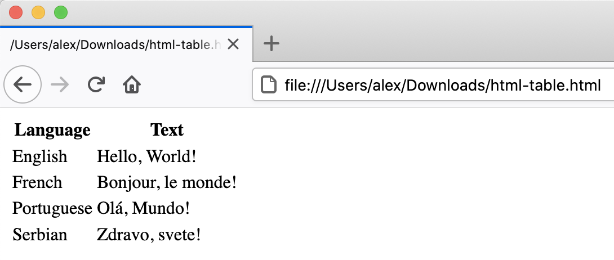
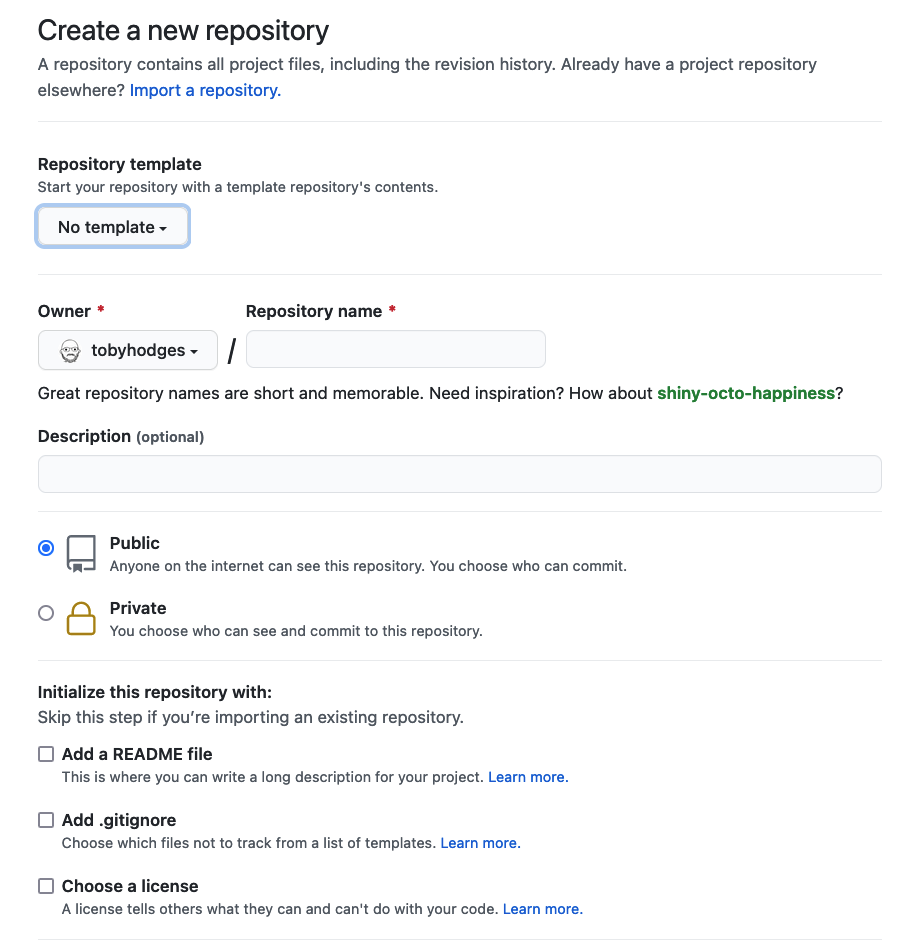
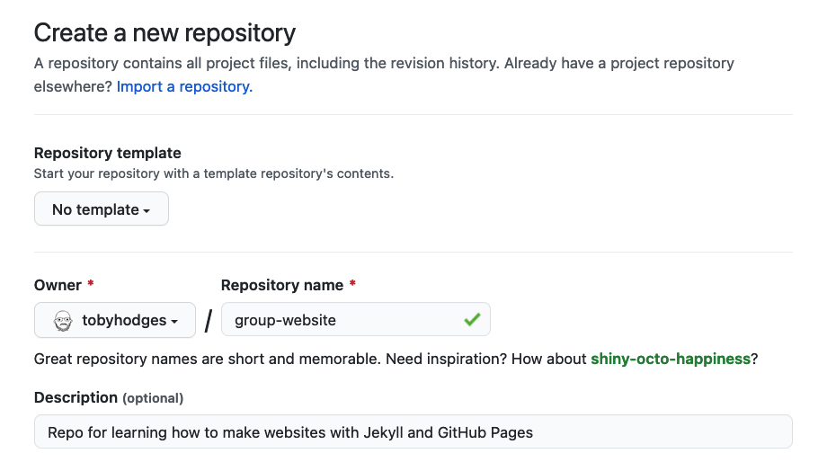
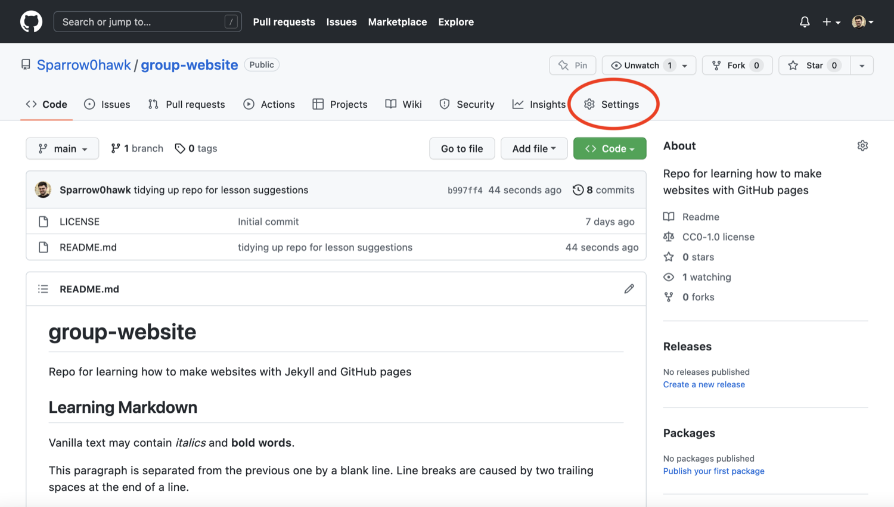

“Why should I use GitHub or GitLab Pages to create my website?”
Objectives
“Explain what a static site generator does.”
“Choose the appropriate tool for a website/project.”
How Websites Work
When we use a web browser to visit a page on the World-Wide Web, the
browser asks for information from a server - a computer storing the data
relevant to the site and configured to receive and respond to requests
for that data. Assuming there were no problems at this stage
(e.g. asking for a page which doesn’t exist, or being unable to reach
the server), our browser receives and interprets this information to
render and display the webpage on our screen. (A web developer would
probably be horrified to read such a gross oversimplification, which is
just one reason why web developers are not the target audience of this
tutorial.)
The page displayed by the web browser is the result of combining
HTML - a hierarchical format describing the structural
elements of the page and their raw content - with CSS -
an ordered set of styling instructions telling the browser how the
content should be organised and formatted - and any
images that should be embedded in the page. Other
information received from the server, but not displayed by the browser,
includes metadata, cookies, and other
non-visible elements in the HTML - information about the site that could
be relevant for a computer but probably isn’t interesting to a human
(there are exceptions
to this) - and scripts that the browser may run to do something in
response to various triggers.
Hello World in HTML
When learning a new programming language, you may often find a
reference to the popular Hello world example. These
examples typically capture the simplest code that can produce and
display the text “Hello, World!” on screen.
As HTML requires certain tags to be present and almost always in
matching pairs (open <tag> and closing
</tag>), HTML documents tend to get verbose rather
quickly.
So as you can imagine, writing long HTML documents by hand is rather
painful. Notice that we didn’t specify anything about how and where the
text should be displayed.
To achieve this we would additionally need to include stylized tags
or Cascading Style Sheets (CSS) instructions. If you do not provide CSS
instructions (either inside your HTML document or as a separate file), a
web browser will make a best guess regarding the layout of HTML elements
on the page based on its defaults.
The Many Tags in HTML
In the Hello world example above 5 different tags are
used (html, head, title,
body and p) in their open
<> and closed </> form. We see
also the special doctype tag that indicates the format and
version of the document, in this case, [HTML(5)][html5-wikipedia].
Many other tags exist to define: - structural elements, such
as table, div, span,
nav, section;
- lists, such as ul (for unordered lists) and
or (for ordered lists); - stylized elements, such
as i/em (for italics/emphasis),
b/strong (for bold) and
u (for underlined text); - headings,
numbered from h1 to h6 for titles and
progressively smaller sub-titles; - media elements, such as
img, video, audio to embed rich
media content; and - links, using the important a
(anchor) tag to link to sections in the same page or
other pages within the same or external websites.
The [list of valid HTML tags][html5-tags] is rather extensive,
covering a rich range of features powering today’s [world wide
web][www-wikipedia].
Exercise: Writing Basic HTML
Given the stylized text:
Hello, World!
write the HTML that will produce the same result.
Hint the big font is achieved by use of a heading.
HTML
<h1><em>Hello</em>, World!</h1>
Let’s write a more complex HTML example using a table showing the
“Hello, World!” text in different languages that renders like: {:
.image-with-shadow width=“600px” }
The HTML to produce such a table looks like this (you can copy+paste
the snippet into the HTML file you created in the previous example):
HTML
<table><tr><th>Language</th><th>Text</th></tr><tr><td>English</td><td>Hello, World!</td></tr><tr><td>French</td><td>Bonjour, le monde!</td></tr><tr><td>Portuguese</td><td>Olá, Mundo!</td></tr><tr><td>Serbian</td><td>Zdravo, svete!</td></tr></table>
Each row is enclosed between table
row <tr> and
</tr> tags. Within a row, <th> and
</th> tags are used to contain table
headings (special table cells displayed in bold font),
while regular table data cells are
contained within <td> and </td>
tags.
A similar example written using HTML lists would look as follows:
{:
.image-with-shadow width=“600px” }
HTML
<ul><li>English: Hello, World!</li><li>French: Bonjour, le monde!</li><li>Portuguese: Olá, Mundo!</li><li>Serbian: Zdravo, svete!</li></ul>
Here, we used unordered list tags
<ul> and </ul> to define a list
with 4 items, each in turn wrapped in individual list
item (<li> and
</li>) tags.
Static vs Dynamic Sites
Static pages are those whose contents are stored on a server
in a state ready to be sent to any user who makes a request for that web
page. When a request is made, the server only needs to send the
information comprising that web page (such as HTML and CSS). Sites that
do not change often, such as a website containing one’s CV, are often
stored as static sites.
Conversely, dynamic sites are those that have their pages
generated when a user makes a request for a web page. Depending on when
the request is made, the content might change; for example, clicking
refresh when viewing a discussion in a web forum might result in new
comments showing up. The key difference is that static pages need only
be generated once, after which they rest unchanged on the server,
compared to dynamic pages which are regenerated by a server every time
it receives a request. This lesson focuses on static sites and tools
that can be used to create them, known as Static Site
Generators.
One of the advantages of using static site generators is that they
remove the need for us to manually produce a lot of HTML, allowing us to
focus on the human-readable content we want our pages to contain.
However, we still need a way to tell the generator how we want our
content to look when it’s displayed in the browser. For that, we will
use a tool called Markdown, which we’ll learn about in the next
episode.
Pages can be created in several ways: static
server-side generation (where HTML is generated once on the server and
doesn’t change thereafter), dynamic server-side generation (where the
server can update and send new HTML based on requests from the user’s
browser), and client-side generation (where parts of HTML pages are
generated by the browser using Javascript code)
Figure 1.1: Page Generation Alternatives. This figure is a
modified version of the original published in [JavaScript for Data
Science][js4ds], and is reproduced here with permission from the
author.
Static-generated sites are a great choice when the information you
want to display on a website is the same regardless of who visits your
site and when, and if the content of your pages is unlikely to need to
change very often. This makes Static Site Generators a good choice for
sites that provide documentation or lesson content like this page: the
aim of the page is to deliver the same information to every visitor. The
visitor can arrive, (hopefully) find and read what they need, and leave
feeling happy and fulfilled.
Dynamic sites provide a lot more possibilities for providing
interactivity and personalised or topical content. But creating them is
a degree more complicated and also places considerable additional burden
on the server, not least in terms of computational requirements and
security considerations. Among other things this means that, unlike with
static pages (see the rest of this lesson), you’re unlikely to find
cost-free platforms to help you deliver dynamic content.
Challenge: The Perfect Tool for the Job
Given the following types of websites, reason if a static site
generator is an appropriate solution to implement them.
A personal website with About and Projects
sections
A forum or discussion platform
A community blog or news website
A search engine (such as google.com)
A wiki (such as wikipedia.com)
An online book
personal website: In most cases,
Yes. This kind of content is typically written/edited
by one person and meant to have a read-only access to visitors.
forum or discussion: Most likely
No. Such website requires interactivity and ways to
identify who wrote what content.
For questions 3 and 5 the answer is both Yes and
No depending on the requirements and necessary
functionality.
blog/news: A simple blog or news website,
maintained by a small set of users, is perfectly achievable by using a
static generator. For very large groups of content creators or if access
to articles needs to be controlled individually, using a static
generator will lead to difficult technical challenges.
search engine: Most often No.
Implementing something as sophisticated as Google’s search would be
close to impossible with a static generator. There are ways to have a
simple engine that searches across all pages produced by a static
generator using indexing and making clever use of browser features but
this approach has many limitations.
wiki: A simple wiki is perfectly doable with a
static generator (e.g. GitHub Wiki Pages),
however it becomes limiting as soon as its content needs to be edited or
discussed by many users, as is the case of Wikipedia.
online book: Definitely Yes.
Static generators are perfect for this type of website. They typically
provide ways to avoid repeating content (variables and templates),
automatic creation of a Table Of Contents, among other
goodies.
GitHub Pages
If the site you want to create is a good match to the strengths of a
static site generator - it’s relatively small, will be updated
relatively infrequently, and the content does not need to be
personalised to the visitor - then creating it with GitHub Pages is a
good option. GitHub Pages is a system allowing users to create and serve
websites directly from their GitHub repositories. The service is free
for public repositories and simple pages can be created and served with
very little configuration required.
There are many different technologies that come together when
creating a website with GitHub Pages that you have to be familiar with
(as shown in the diagram below). It may sound overwhelming at first but
we will explain most of these technologies in this lesson - we only
don’t cover CSS/Sass (styling language that gets compiled into CSS) and
JavaScript/CoffeeScript (scripting language that gets compiled into
JavaScript) in detail.
Static websites in GitHub Pages technology
overview diagram
First, we are going to set up a repository to store our files and
learn more about how to author and format the content of our pages using
HTML and Markdown, before configuring GitHub to display this content as
a website using GitHub Pages.
Setting Up a Repository
Before we get into working with Markdown we must first create a
repository to work in. This repo (short for repository) is similar to a
folder on your computer, the main differences being that the folder
lives on the web in GitHub/GitLab (though you can also keep a copy on
your computer if needed) and that folder is using a version control
software called [git][git] to track changes to the files.
For our purposes we will mostly be ignoring the version control
software, though it can be handy if you need to revert to old versions
(see [Software Carpentry - Version Control with Git][swc-git] for an
introduction). In this lesson we will be working with this folder on the
web to control the website we will be creating.
Make sure to login with your GitHub account and visit https://github.com. Click the
green “New” repo button on the left hand side of GitHub:
New repository button
or click the “+” menu in the upper righthand corner
and choose “New Repository”.
{:
.image-with-shadow width=“200px” }
Next you will need to fill in some info about your repository.

Blank new repository page
In this lesson, we will be working on a general group website. You
can imagine this website may be for your lab group, a specific project
group, or another group you work with. Under the “Repository name” field
type group-website.
New repository - set name to group-website
We can also add a description (for instance Repo for learning
how to make websites with GitHub pages) so we know what this
repo is when we find it again after the workshop.

New repository - set description
Under the “Initialize this repository with:” section we will check
Add a README file and Choose a license. It is
good practice to have a README file that gives more information about
your repo and to set a license for your work.
Initialise a new repository with a README and a
licence file
for this example repository we’ll use the
Creative Commons Zero v1.0 Universal (CC0) license, which
allows anyone to re-use and adapt the content of the repository without
restriction, but you may want to consider choosing something more
restrictive when you’re building your own website.
“How do I publish my page or a website on the Web via GitHub?”
Objectives
“Publish on the Web with GitHub Pages”
GitHub has a service for making content available online called
GitHub Pages.
Publishing a Website With GitHub Pages
GitHub
Pages is a free website hosting service by GitHub that takes files
(Markdown, HTML, CSS, JavaScript, etc.) from your GitHub repository
which is configured as a website, optionally runs the files through a
build process, combines them and publishes them as a website. Any
changes you do to the files in your website’s GitHub repository will be
rendered live in the website.
There are other services available to create and publish websites but
one of the main advantages of GitHub Pages is that you can version
control your website and therefore keep track of all your changes. This
is particularly helpful for collaborating on a project website. GitLab, Codeberg, Sourcehut and BitBucket offer similar services.
Let’s continue from the GitHub repository we have created in the
previous episode. One important file you should already have is
README.md, which will become the homepage of your project
website.
Enabling GitHub Pages
In order to tell GitHub that your repository contains a website that
needs rendering you need to configure GitHub Pages settings. You can do
so from your repository’s Settings page, as explained
below.
You may have noticed that when we created our repository in previous
episode, by default GitHub created a branch called main and
stored our files there. We now need to tell GitHub Pages that this
branch contains our website files.
What Is a Branch?
You may have never heard about Git branches and wonder what they are.
A branch is one version of your project (the files in your repository)
that can contain its own set of commits - you can have many branches
(versions) of your repository. The default branch automatically created
with a new github repository is called main.
Click on the repository’s Settings tab (the one with
the little cog/gear icon) as shown on the figure below:

Repository ‘Settings’ button in GitHub
interface
On the menu on the left hand side, click on
Pages
Select ‘Pages’ tab in repository settings
You will see that the GitHub Pages settings are currently
disabled. Select branch main to tell GitHub which branch to
use as a source and click Save to enable GitHub Pages for
this repository.
Set default branch for the website in repository
settings
The link to your repository’s website will appear in the
highlighted box above. If you click the link - your default browser will
open and show your project website. If this does not happen, you should
manually open your favourite web browser and paste the URL.
URL where the project website will be published
by GitHub Pages
It may take a while (from a few seconds to a few minutes) for
GitHub to compile your website (depending on GitHub’s availability and
the complexity of your website) and it may not become visible
immediately. You will know it is ready when the link appears in green
box with a “tick” in front of the web address (as shown in the figure
below).
Project website URL - indication of a successful
build
Once ready, you should see the contents of the
README.md file that we created earlier, rendered as a
website.
Our first website rendered by GitHub and showing
the contents of README
Using Branch gh-pages for
Websites
By convention, GitHub Pages uses branch called gh-pages
to look for the website content. By creating a branch with that name,
you implicitly tell GitHub that you want your content published and you
do not need to configure GitHub Pages in Settings. Once you
create gh-pages from your current branch (typically
main, created by default when you created the repository),
you can then choose to delete the other branch to avoid any confusion
about where your content is stored.
Either of the above two approaches to turning a repository to a
website will give you the same result - the gh-pages
approach is perhaps more common as it favours convention over
configuration.
Understanding GitHub Pages’ URLs
You may have noticed a slightly strange URL for your website
appearing in that green box with a “tick” in front of it. This URL was
generated by GitHub Pages and is not random. It is formatted as ‘https://GITHUB_USERNAME.github.io/REPOSITORY_NAME’ and
is formed by appending:
your GitHub username or organisation name under which the repository
is created (GITHUB_USERNAME)
‘.github.io/’ (GitHub’s web hosting domain)
the repository name (REPOSITORY_NAME)
Because the repository name is unique within one’s personal or
organisational GitHub account - this naming convention gives us a way of
neatly creating Web addresses for any GitHub repository without any
conflicts.
On the right hand side of your repository on GitHub, you can see the
details of your repository under ‘About’. It is good practice to update
your repository details with a brief description. This is also a place
where you can put your repository’s Web URL (as not everyone will have
access to your repository’s Settings to find it) and add
descriptive topics or tags about the content or technologies used in
your repository or project.
You can edit the details of your repository by clicking on the little
cog/gear button as shown on the figure below.
About section of a repository - edit repository
details
By doing this, you add a link to the repository’s website on your
repository’s landing page and anyone (including yourself) can access it
quickly when visiting your GitHub repository.
Key Points
“GitHub Pages is a static site hosting service that takes files in
various formats (Markdown, HTML, CSS, JavaScript, etc.) straight from a
repository on GitHub, builds them into a website, and publishes them on
the Web”
“By convention, if you create a branch called gh-pages
in your repository, it will automatically be published as a website by
GitHub”
“You can configure any branch of a repository to be used for website
(it does not have to be gh-pages)”
“How can I configure values/settings for my site?”
Objectives
“Substitute variable values into page content”
“Adjust the configuration of the site and individual pages”
Haunt is a
powerful static site generator. It creates static HTML website content
out of various files in your repository (Skribe files, Markdown files,
CSS style sheets, layouts, etc.). This ‘compiled’ content can then be
served as your website via the github.io Web domain
(remember your website’s URL from the previous episode?). Your GitHub
repository can be configured to re-generate all the HTML pages for your
website each time you make a change in it.
Haunt makes managing your website easier because it depends on
templates. Templates are blueprints that can be reused by multiple
pages. For example, instead of repeating the same navigation markup on
every page you create (such a header, a footer or a top navigation bar),
you can create a layout that gets used on all the pages. Otherwise, each
time you update a navigation item - you’d have to make edits on every
page. We will cover templates and layouts in a bit; for now let’s start
learning Haunt and its scripting language called Scheme.
Then go to settings, and choose to serve the site from the
gh-pages branch and from the root folder.
The website should be rebuilt whenever there are changes to the
repository. GitHub has a service called GitHub Actions. On the
settings page, expand the Actions submenu and choose the
General page. Ensure that - Allow all actions and
reusable workflows - Require approval for first-time
contributors = Read and write permissions are
selected. The save your settings. For more on GitHub Actions settings,
see the documentation.
Global Configuration
Haunt’s main configuration options are specified in a
haunt.scm file, which is written in called Scheme and placed in your site’s root
directory.
From the GitHub interface, click on the haunt.scm file
in your site’s root directory.
Click on the pencil icon to edit the haunt.scm
file.
Update the author to your name and domain to
myusername.github.io
Optionally update the email or remove it if you do not wish to share
your email address.
Commit your changes.
A first change
Go to the code section of the repository, then view the
posts folder and click on my-first-post.skr
which should contain
SCHEME
(post :title "My first post!" :date (make-date* 202506210900) :tags '("Skribe""scheme""program")(h1 [My first post!])(p [This is a static website and blog.])(p [The source is written in Skribe, a document format that allows you to use embed scheme programs to create your document.])(p [1+2+3+4+5=] (+12345)))
The post contains some metadata including the title and date as well
as tags to be used to indicate the topics of interest. It is written in
Skribe. Text is enclosed in square brackets [] and code and
annotations are enclosed in parenthesis (). The tag
h1 indicates a first level heading and the tag
p indicates a paragraph.
The third paragraph is unusual, there is a string
[1 + 2 + 3 + 4 + 5 =] in square brackets followed by an
expression (+ 1 2 3 4 5) in parenthesis. The expression is
evaluated when generating the website.
Go to your website which should be avilable at https://my-username.github.io there should be a page
with a link to your first blog post. Click on the link to open the first
blog post. The last line should have
1 + 2 + 3 + 4 + 5 = 14.
Challenge: Modify the expression to be evaluated
In my-first-post.skr modify
SCHEME
(p [1+2+3+4+5=] (+12345)))
to add numbers from 1 to 7. Commit your changes, then wait for the
site to be regenerated. Confirm that the correct sum is shown.
Modify the last section of my-first-post.skr to
contain
SCHEME
(p [1+2+3+4+5+6+7= ] (+1234567)))
When Things Go Wrong
So far we have seen how to successfully use Haunt to produce a
website. There are however some situations where Haunt may fail to do so
either due to a typo or missing information.
Challenge: Troubleshooting Haunt
This exercise will help you recognise what common mistakes look like
when working with these elements of a Haunt website.
Edit your haunt.scm file and omit a closing parenthesis
) in one of the lists.
For instance, a missing closing parenthesis ) after blog
in the site section.
Haunt will refuse to build the website and produce an error
message.
We will see after this where to find the error message and identify
what caused them.
If you were keeping an eye on the GitHub repository page until now,
you may have noticed a yellow circle visible when the website is still
being processed and a green check mark (✓) when successful. You may have
also noticed that in the same location there is now a red cross/X next
to the commit message (❌). This indicates that something went wrong
with the Haunt build process after that commit.
Jekyll pending/successful/failed builds after
different commits
You may also find an email from GitHub in your inbox with details
about the error. But let’s look at our repository again. If we click the
red cross/X next to the commit message (❌) a little pop-up will appear
with additional information.
Jekyll - a failed build
Visiting the page behind the Details link will give
us the information we were missing.
Jekyll - error details of a failed build
The build should contain output with some content similar to
OUTPUT
ice-9/read.scm:126:4: In procedure lp:
haunt.scm:27:1: unexpected end of input while searching for: )
From this page we can see that what caused the failure affected the
haunt.scm file, and we should check for a missing
parenthesis. Since this typo prevents Haunt from building the page, the
process cannot continue.
Failure Will Not Remove Your Website
Given the failure you may be wondering what happened to the website?
If you visit the address you will find that the website is still be
available.
GitHub will keep your previous version online until the error is
fixed and a new build is completed successfully.
Lets go ahead and fix your intentional typo and re-add the missing
):
After a few seconds we should see a green checkmark again and our
website will be updated.
Challenge: Practice With Troubleshooting
Sometimes typos happen and can make your website change in surprising
ways. Let’s experiment with some possible issues that might come up and
see what happens.
Try the changes listed below on your my-first-post.skr
file and see what happens when you try to build the site. You will want
to correct the previous mistake each time. 1. Remove an opening square
bracket [. 2. Remove a closing square bracket
]. 3. Change :tags '( to :tags (.
4. Change :date to date. 5. Change
(p [The source to ( [The source.
The site refuses to build and the build logs have an error
message.
OUTPUT
ERROR: In procedure %resolve-variable:
Unbound variable: #{\x5d;}#
The site builds, butwhen viewed in a browser a section is extended.
Example generated html is below.
HTML
<!DOCTYPE html><head><meta charset="utf-8"/><title>My first post! — Built with Haunt, a Scheme Static Site generator</title></head><body><h1>Built with Haunt, a Scheme Static Site generator</h1><h2>My first post!</h2><h3>by A.N. Other — Sat 21 June 2025</h3><div><h1>My first post!)(p [This is a static website and blog.</h1><p>The source is written in Skribe, a document format that allows you to use embed scheme programs to create your document.</p><p>1 + 2 + 3 = 6</p></div></body>
The site refuses to build with the output message
OUTPUT
ice-9/eval.scm:217:33: In procedure lp:
Wrong type to apply: "Skribe"
When the colon before date is removed the site refuses
to build with the error message:
OUTPUT
ERROR: In procedure %resolve-variable:
Unbound variable: date
When the p annotation is removed the site refuses to
build with the error message:
OUTPUT
ice-9/eval.scm:217:33: In procedure lp:
Wrong type to apply: ("The source is written in Skribe, a\n document format that allows you to use\n embed scheme programs to create your\n document.")
Challenge: Practice With Troubleshooting
(continued)
Note: Be sure to fix any errors you intentionally introduced in your
page before moving on.
Key Points
“Sites can be built by GitHub using GitHub Actions”
“Site build configuration is done in haunt.scm”
“Errors can happen but Haunt will often tell us something is
wrong”
 {:
.image-with-shadow width=“600px” }
{:
.image-with-shadow width=“600px” }


 {:
.image-with-shadow width=“200px” }
{:
.image-with-shadow width=“200px” }


 Select ‘Pages’ tab in repository settings
Select ‘Pages’ tab in repository settings Set default branch for the website in repository settings
Set default branch for the website in repository settings URL where the project website will be published by GitHub Pages
URL where the project website will be published by GitHub Pages Project website URL - indication of a successful build
Project website URL - indication of a successful build Our first website rendered by GitHub and showing the contents of README
Our first website rendered by GitHub and showing the contents of README